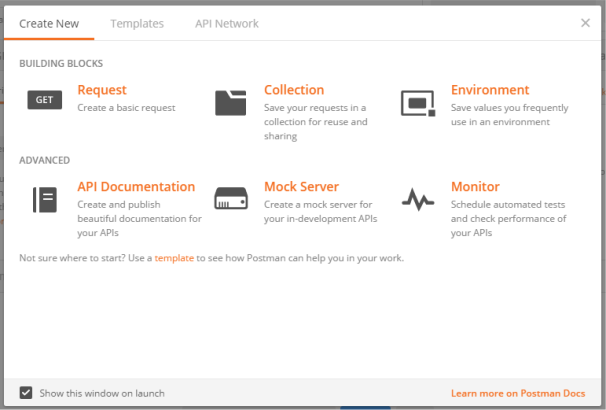
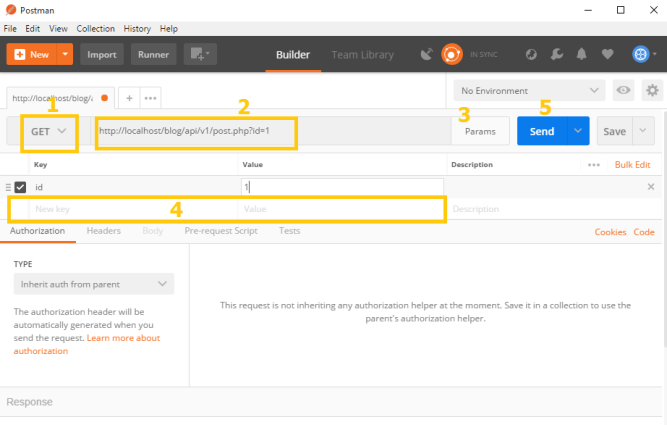
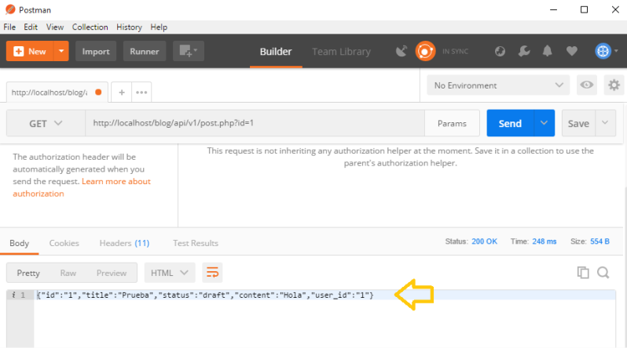
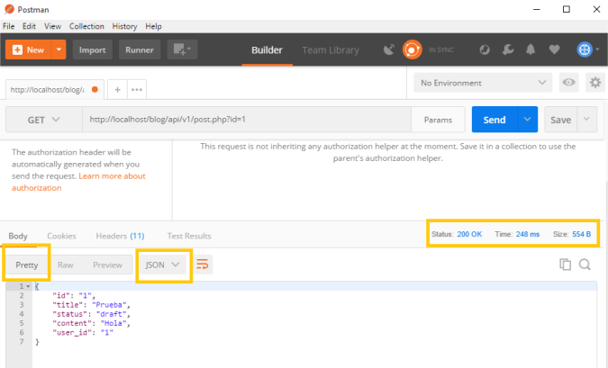
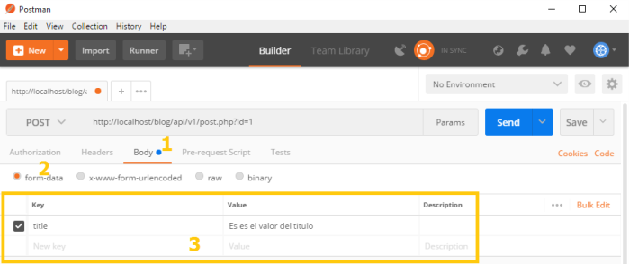

Ejecución de REST por HTTP
Al iniciar postman, verás una pantalla como esta. No elijas ninguna de esas opciones, solo cierra la pantalla

Consultar RESTful web services con parámetros GET
En la pantalla principal vamos a ver una ventana como esta.

Ahora voy a describirte lo más importante (he numerado la imagen para hacer referencia a sus partes)
1 - Aquí puedes definir el método que vas a usar, por ejemplo GET, POST, DELETE, etc
2 - Aquí colocas la dirección del servicio RESTful
3 - Usualmente llamas al servicio usando parámetros, así que si presionas el botón Params, se activa una sección (4) en donde puedes agregar parámetros.
4 - Aquí puedes agregar parámetros que se envían junto con la dirección (URL), debes escribir el nombre de la clave (key) y su valor (value). En la imagen yo agregue la clave id, con valor 1
5 - Finalmente presionas el botón Send para enviar la petición.
Como leer la respuesta en un formato amigable
Al ejecutar una petición a un servicio RESTful, vas a ver una pantalla como esta

Como ves, es difícil de leer la respuesta, pero podemos hacer que nos muestre la respuesta en un formato más
ordenado. Para eso debemos presionar el botón Pretty y seleccionar el formato JSON, esto hará que la salida
se pueda leer claramente. También ten en cuenta que puedes leer el código de respuesta (por ejemplo 200 ok),
el tiempo que se tardó el servicio RESTful en responder y el tamaño de la respuesta.

Como enviar parámetros POST (form-data) con postman
Para enviar los parámetros por el método post, primero debemos hacer clic sobre el enlace Body, luego debemos
verificar que este seleccionada la opción form-data. Esto activa la sección para ingresar parámetros que se
envían en el cuerpo, como los que se envían a través de formularios. Aquí agregamos los parámetros que
necesitemos ingresado su clave y su valor, luego presionamos el botón Send.
